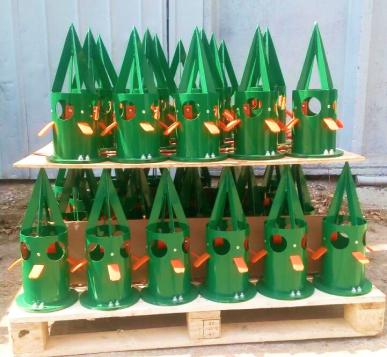

Розтарювач OpenBag
Компанія Allur-Agro — офіційний дилер KingKong-Tools.
Пропонуємо молотки (зубці, різці, ножі) для різних моделей відомих виробників лісових мульчерів, подрібнювачів пнів, подрібнювачів деревини, подрібнювачів каміння, а також бурових головок, дорожніх фрез, траншеєкопачів і сільськогосподарських машин для обробки грунту. Виробник швидко обробляє замовлення, готовий відправити деталі в день замовлення.
Для збільшення швидкості проведення сільськогосподарських робіт не обов’язково купувати додаткові одиниці техніки. Слід лише налагодити ефективну доставку посівного матеріалу і добрив, а також швидке завантаження ваших сівалок.
Переваги роботи з OpenBag™
- Економія коштів за рахунок відсутності просипання під час завантаження сівалки.
- Підвищення продуктивності техніки завдяки збільшенню швидкості завантаження.
- Зручність, простота і безпека використання.
- Можливість подальшого використання біг-бегів завдяки мінімізації їх пошкодження.
- Управління потоком вмісту біг-бегу, для роботи достатньо одної людини.
Розтарювач біг-бегів або шнек?
Переваги розтарювача OpenBag перед звичайним шнеком для завантаження сівалок.
- У 4 рази вище швидкість завантаження сівалки.
- Збільшення продуктивності сівалки на 75 Га за посівну.
- Не порушується цілісність посівного матеріалу та добрив.
- За рахунок посіву в агрономічні терміни збільшення врожайності на 15–20%.


{kind=link}